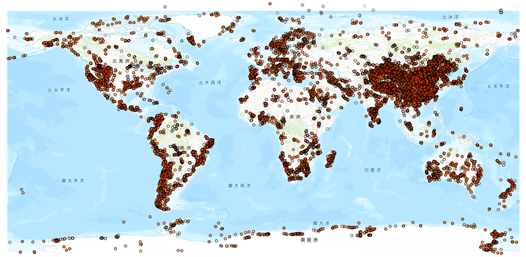
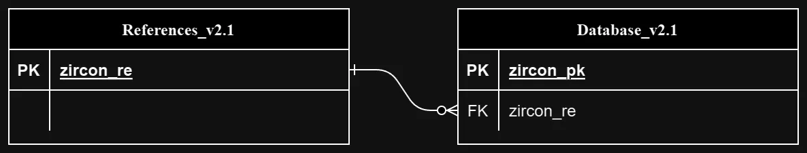

整理入库数据集
罗列古地理工作组已整理入库的各类地球化学数据集，并将其整理为数据集介绍。
Zircon_Wu_2023 锆石数据库
全球大陆地壳锆石U-Th-Pb地质年代学数据库，包含 1,351,483 行同位素数据。
数据来源
来源机构：北京大学，Peking University。
数据提供者：Wu Yujing
数据更新时间：2023年1月1日。
数据集介绍
数据分布示意
源数据包含数据和数据参考文献两部分，ER关系图如下：
ER关系图
其中设置入库的同位素数据表主键为zircon_pk，参考文献数据表主键为：zircon_re。
将同位素数据表的zircon_re列外键约束至参考文献数据表主键为：zircon_re
数据表字段
待更新
BIOME 6000 古植被测绘项目
数据背景
古植被测绘项目（称为BIOME 6000：Prentice和Webb，1998年）是在国际地圈-生物圈方案的主持下建立的，旨在重建全新世中期（MH，6ka）和末次冰期（LGM，21ka）的植被模式，明确用于与使用基于植被的气候模型或运行由气候模型输出驱动的生物地理学模型进行的植被模拟进行比较。BIOME 6000开发了一种将花粉组合转化为植被重建（生物化）的方法，该方法涉及将单个花粉分类群分类为植物功能类型（PFT），根据其特征或定义PFT表征主要植被类型（生物群落），并应用算法来选择在某个地点代表的最可能的生物群落（Prentice等人， 1996年）。 BIOME 6000最初为各个地区绘制了地图：欧洲（Prentice等人，1996年），非洲和阿拉伯半岛（Jolly等人，1998年），前苏联和蒙古（Tarasov等人，1998年）和中国（Yu等人，1998年）。随后又增加了其他区域，包括白令亚（Edwards等人，2000年）、北美西部（Thompson和Anderson，2000年）、加拿大和美国东部（Williams等人，2000年）和日本（Takahara等人，2000年），以及欧亚大陆北部（Tarasov等人，2000年）、中国（Yu等人，2000年）以及南欧和非洲（Elenga等人，2000年）的数据进行了更新。作为泛北极计划的一部分，对环北极地区应用了更全面的生物化计划（PAIN：Bigelow等人，2003年），并且还对大洋洲（Pickett等人，2004年）和南美洲（Marchant等人，2009年）进行了生物化。Harrison等人（2001年）和Ni等人（2010年）制作的生物群落重建中还包括了其他中国遗址。没有试图使这些区域汇编中使用的生物群落术语标准化，而且不可避免地，各区域之间公认的生物群落数量和PFT组成各不相同。在Prentice等人（2000年）制作的第一套全球地图中，没有试图标准化命名法。由于缺乏标准化，与模型输出进行比较变得困难。Harrison 和 Bartlein （2012） 对 BIOME 6000 数据进行了同质化和非常简化的（巨型生物组）分类，这已被用于随后的数据模型比较（例如 Braconnot 等人，2012 年;Bragg et al.，2013），但涉及相当大的信息损失。生物地理学模型BIOME4.2已被推荐为将气候模型输出转换为植被分布的工具，以便在耦合模式比较项目CMIP6的当前阶段与古气候实验的古数据进行比较（参见例如Kagayama等人，2016）。Bigelow等人（2003年）特意使用生物群落名称和定义来匹配BIOME4.2模拟的生物群落（Kaplan等人，2003年），但不幸的是，这种直接匹配仅适用于北纬55°以北的地点，而不适用于其他BIOME 6000地点。在目前的数据集中，已经产生了数据集，以便于使用BIOME 6000来评估CMIP6中的MH和LGM实验。该文件包括 BIOME 6000 数据集的标准化生物群落名称、BIOME 6000 名称到 BIOME4.2 生物群落的转换、BIOME 6000 和 BIOME 4.2 之间的全球适用转换，以及可用于与其他植被模型进行比较的简化 Megabiome 方案。
文件结构
A 列：目标年龄 （ka）。这给出了以千年 BP
为单位的样品指定年龄，其中三个时期是现代 （0）、全新世中期 （6）
和末次冰期最大值 （21）。
B 列：站点名称。这将给出原始出版物中站点的指定名称。
C列：纬度。这以十进制度为单位给出了站点的纬度。
D列：经度。这以十进制度为单位给出了站点的经度。
E列：BIOME
6000合并名称。这给出了全球适用的 BIOME 6000
标准化分类中的生物群落名称。在这种标准化分类中，有32个不同的生物群落（见表1）。
F列：BIOME
6000生物群落代码。这为全球适用的 BIOME 6000
标准化分类中的每个生物群落提供了代码。
G列：生物群落4.2
生物群落6000个常见生物群落。这给出了 BIOME 6000 重建和 Biome 4.2
全球通用的生物群落集的名称。与K列中给出的生物群落相比，这是一组减少的生物群落，由16个生物群落组成（见表1）。BIOME
6000数据集中生物群落区分程度之间的差异（例如，在BIOME
4.2和PAIN数据集中区分的苔原生物群落的独特类型被归为一个类别，因为这些区别在其他地区重建中没有进行），有些合并是由于将BIOME
6000生物群落分配给BIOME
4.2生物群落的模糊性所必需的（例如，寒冷混交林和BIOME 6000 和 BIOME 4.2
均认可凉爽混交林，重建的生物群落冷温带常绿针叶林和混交林具有两者的特征，不受
BIOME 4
的区分。2;因此，这三个类别被合并到共同生物群落列表中）。
H列：巨型生物群落（方案2）。这给出了Harrison和Bartlein（2012）的巨型生物组分类方案中定义的生物群落。该方案承认有8个生物群落（见表1）。这些生物群落的定义足够广泛，它们应该与气候模型使用的大多数植被方案兼容。第一列：模型代码中的BIOME
4.2名称。这给出了 Biome 4.2
代码中使用的输出名称。这些名称可以直接翻译成Bigelow等人（2003）使用的生物群落名称，但为了方便起见，在模型代码中进行了缩短。J
列：生物群落 4.2 代码。这给出了模型输出的 BIOME 4.2
生物群落的代码。请注意，这些代码编号与 BIOME 6000
等效生物群落的代码不同。
K列：BIOME4.2 BIOME 6000-当量。这给出了
BIOME 6000 合并名称和 BIOME 4.2
生物群落名称之间的确切等价物。在没有一对一等价的情况下，可以指示多个模型生物群落。例如，在BIOME
6000数据集中被指定为草原的生物群落可能等同于模拟的生物群落温带旱生灌木丛、热带旱生灌木丛、温带草地或热带草地。
ArcGIS 在线地图调用尝试
地质年代表网页查询
更多数据集接入中